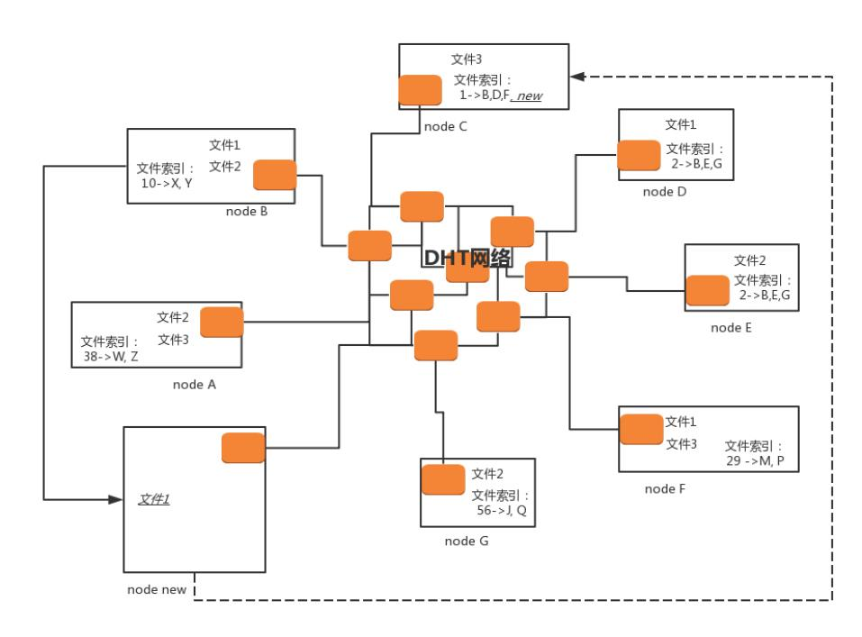

下载文件最简单的方式 HTTP，但是下载很慢，可以使用 FTP（文件传输协议）。
FTP 采用两个TCP 连接来传输一个文件：
list —— 获取文件目录；reter —— 取一个文件；store —— 存一个文件。两种模式都是站在 FTP 服务器的角度来说的。
客户端随机打开一个大于 1024 的端口 N，向服务器的命令端口 21 发起连接，同时开放 N+1 端口监听，并向服务器发出 port N+1 命令，由服务
器从自己的数据端口 20，主动连接到客户端指定的数据端口 N+1。
当开启一个 FTP 连接时，客户端打开两个任意的本地端口 N（大于 1024）和 N+1。第一个端口连接服务器的 21 端口，提交 PASV 命令。然后，服
务器会开启一个任意的端口 P（大于 1024），返回 227 entering passive mode 消息，里面有 FTP 服务器开放的用来进行数据传输的端口。客
户端收到消息取得端口号之后，会通过 N+1 号端口连接服务器的端口 P，然后在两个端口之间进行数据传输。
无论是 HTTP 的方式，还是 FTP 的方式，都有一个比较大的缺点，就是难以解决单一服务器的带宽压力，因为它们使用的都是传统的客户端服务器的方式。
P2P 就是 peer-to-peer。资源开始并不集中地存储在某些设备上，而是分散地存储在多台设备上。这些设备我们称为 peer。
想要下载一个文件的时候，你只要得到那些已经存在了文件的 peer，并和这些 peer 之间，建立点对点的连接，而不需要到中心服务器上，就可以
就近下载文件。一旦下载了文件，你也就成为 peer 中的一员，你旁边的那些机器，也可能会选择从你这里下载文件，所以当你使用 P2P 软件的时候，
例如 BitTorrent，往往能够看到，既有下载流量，也有上传的流量，也即你自己也加入了这个P2P 的网络，自己从别人那里下载，同时也提供给其他人
下载。可以想象，这种方式，参与的人越多，下载速度越快，一切完美。
怎么知道哪些 peer 有你要下载的文件？
这就用到种子啦，也即咱们比较熟悉的 .torrent 文件。.torrent 文件由两部分组成，分别是：announce（tracker URL）和 文件信息。
文件信息里面有这些内容:
下载时，BT 客户端首先解析 .torrent 文件，得到 tracker 地址，然后连接 tracker 服务器。tracker 服务器回应下载者的请求，将其他
下载者（包括发布者）的 IP 提供给下载者。下载者再连接其他下载者，根据 .torrent 文件，两者分别对方告知自己已经有的块，然后交换对方
没有的数据。此时不需要其他服务器参与，并分散了单个线路上的数据流量，因此减轻了服务器的负担。
下载者每得到一个块，需要算出下载块的 Hash 验证码，并与 .torrent 文件中的对比。如果一样，则说明块正确，不一样则需要重新下载这个块。
这种规定是为了解决下载内容的准确性问题。
这种方式特别依赖 tracker。tracker 需要收集下载者信息的服务器，并将此信息提供给其他下载者，使下载者们相互连接起来，传输数据。虽然
下载的过程是非中心化的，但是加入这个 P2P 网络的时候，都需要借助 tracker 中心服务器，这个服务器是用来登记有哪些用户在请求哪些资源。
一旦 tracker 服务器出现故障或者线路遭到屏蔽，BT 工具就无法正常工作了。
DHT（Distributed Hash Table）去中心化网络，每个加入这个 DHT 网络的人，都要负责存储这个网络里的资源信息和其他成员的联系信息，相当
于所有人一起构成了一个庞大的分布式存储数据库。
有一种著名的 DHT 协议，叫 Kademlia 协议。这个和区块链的概念一样。
任何一个 BitTorrent 启动之后，它都有两个角色。一个是 peer，监听一个 TCP 端口，用来上传和下载文件，这个角色表明，我这里有某个文件。
另一个角色 DHT node，监听一个 UDP 的端口，通过这个角色，这个节点加入了一个 DHT 的网络。

在 DHT 网络里面，每一个 DHT node 都有一个 ID。这个 ID 是一个很长的串。每个 DHT node 都有责任掌握一些知识，也就是文件索引，也即
它应该知道某些文件是保存在哪些节点上。它只需要有这些知识就可以了，而它自己本身不一定就是保存这个文件的节点。
每个 DHT node 不会有全局的知识，也即不知道所有的文件保存在哪里，它只需要知道一部分。那应该知道哪一部分呢？这就需要用哈希
算法计算出来。
每个文件可以计算出一个哈希值，而 DHT node 的 ID 是和哈希值相同长度的串。
DHT 算法是这样规定的：如果一个文件计算出一个哈希值，则和这个哈希值一样的那个 DHT node，就有责任知道从哪里下载这个文件，即便它自己
没保存这个文件。
当然不一定这么巧，总能找到和哈希值一模一样的，有可能一模一样的 DHT node 也下线了，所以 DHT 算法还规定：除了一模一样的
那个 DHT node 应该知道，ID 和这个哈希值非常接近的 N 个 DHT node 也应该知道。
什么叫和哈希值接近呢？例如只修改了最后一位，就很接近；修改了倒数 2 位，也不远；修改了倒数 3 位，也可以接受。总之，凑齐了规定的 N 这个
数就行。
刚才那个图里，文件 1 通过哈希运算，得到匹配 ID 的 DHT node 为 node C，当然还会有其他的，我这里没有画出来。所以，node C 有责任知道
文件 1 的存放地址，虽然 node C 本身没有存放文件 1。
接下来一个新的节点 node new 上线了。如果想下载文件 1，它首先要加入 DHT 网络，如何加入呢？
在这种模式下，种子 .torrent 文件里面就不再是 tracker 的地址了，而是一个 list 的 node 的地址，而所有这些 node 都是已经在 DHT 网络
里面的。当然随着时间的推移，很可能有退出的，有下线的，但是我们假设，不会所有的都联系不上，总有一个能联系上。
node new 只要在种子里面找到一个 DHT node，就加入了网络。
node new 会计算文件 1 的哈希值，并根据这个哈希值了解到，和这个哈希值匹配，或者很接近的 node 上知道如何下载这个文件，例如计算出来的哈
希值就是 node C。
但是 node new 不知道怎么联系上 node C，因为种子里面的 node 列表里面很可能没有 node C，但是它可以问，DHT 网络特别像一个社交网
络，node new 只有去它能联系上的 node 问，你们知道不知道 node C 的联系方式呀？
在 DHT 网络中，每个 node 都保存了一定的联系方式，但是肯定没有 node 的所有联系方式。DHT 网络中，节点之间通过互相通信，也会交流联
系方式，也会删除联系方式。和人们的方式一样，你有你的朋友圈，你的朋友有它的朋友圈，你们互相加微信，就互相认识了，过一段时间不联系，就删
除朋友关系。
所以，node new 想联系 node C，就去万能的朋友圈去问，并且求转发，朋友再问朋友，很快就能找到。如果找不到 C，也能找到和 C 的 ID 很像的节
点，它们也知道如何下载文件 1。
在 node C 上，告诉 node new，下载文件 1，要去 B、D、F，于是 node new 选择和 node B 进行 peer 连接，开始下载，它一旦开始下载，自己
本地也有文件 1 了，于是 node new 告诉 node C 以及和 node C 的 ID 很像的那些节点，我也有文件 1 了，可以加入那个文件拥有者列表了。
但是你会发现 node new 上没有文件索引，但是根据哈希算法，一定会有某些文件的哈希值是和 node new 的 ID 匹配上的。在 DHT 网络中，会有
节点告诉它，你既然加入了咱们这个网络，你也有责任知道某些文件的下载地址。